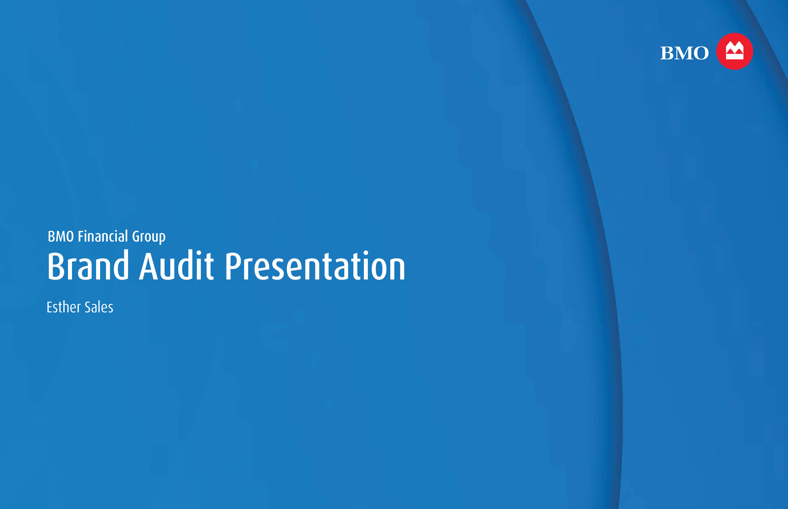
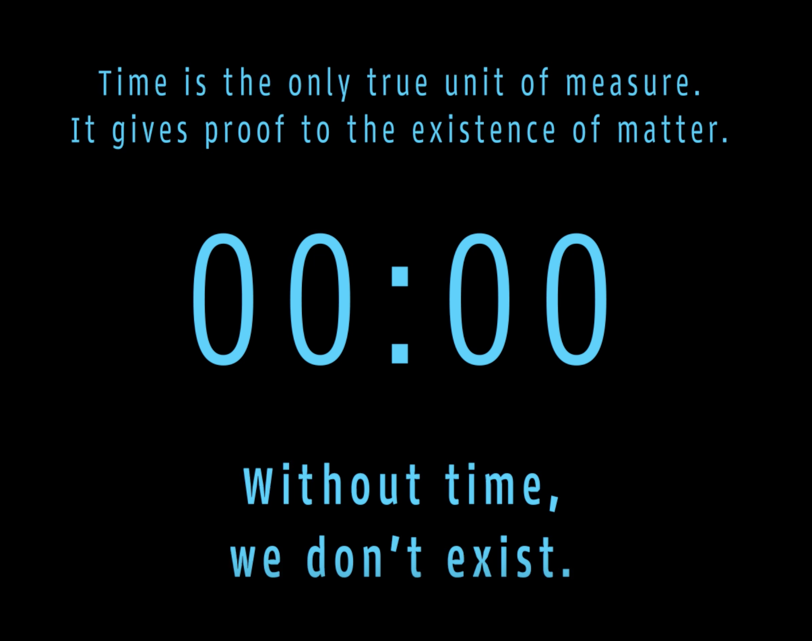

I’m a multidisciplinary graphic designer interested in how visual communication can make information clearer, more engaging and easier to understand. My work moves across branding, digital experiences, publications and motion, with a strong focus on typography, structure and visual systems.
My approach to design starts with understanding what needs to be communicated and who it needs to reach. My background in psychology and digital marketing has shaped the way I think about audience, behaviour and context, while my design practice has taught me how to translate those ideas into visual form. I’m most drawn to projects where I can identify communication gaps, organize complex information and build a visual language that feels intentional and accessible.

Branding

Branding

Branding

Website

Packaging

Motion

Under the Surface: The Series

Website

Branding